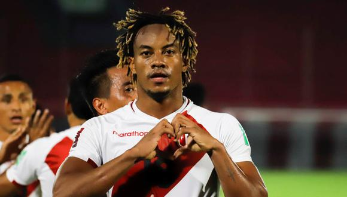

Juega, hace jugar y mete goles. André Carrillo se viene convirtiendo en el jugardor más importante de nuestra selección.
La " Culebra " lleva 10 goles con la "Bicolor". Tras un Primer tiempo regular, creció en el complemento.
Y llegó el momento que tanto esperaba. En la fiesta del Inti-Raymi.
Como para sellar por siempre, que lleva esa sangre incaica.
Enraizado, guerrero y decidido a dejar hasta la última gota de sudor en el campo. Gianluca Lapadula empezó a contagiarse de nuestros gritos. A su entrega de seguridad y humildad, le agregó el ingrediente que todos queríamos: el gol.
El Bambino de los Andes tenía un golpe en su pie derecho, sufrido en el partido contra Colombia, pero no quiso perderse el duelo con Ecuador.
Su esfuerzo lo llevó a ser elegido por Commebol como "El mejor jugador del partido". "Hemos conseguido un empate importante que nos permite la Clasificación".
"Estoy muy feliz de haber marcado mi primer gol con la blanquirroja", escribió Lapadula en su Instagram acompañado de una foto de su niñez vistiendo la camiseta peruana.
Su primner gol con la selección se da luego de su sétimo encuentro. Disparó fuerte a los 47" y lejos de pensar en su alegría , corrió al medio del campo para buscar el empate. A los 54" se desprendió de dos rivales y como en Quito, no pecó de egoista y prefirió darle el balón a André Carrillo que la lanzó al fondo.